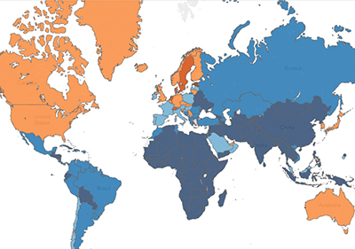

Natural Disaster Data Visualization
A screenshot of our interactive data visualization
Summary
An interactive data visualization, built in Tableau, which encourages users to explore natural disaster statistics alongside other country data throughout the world.
My Role
I was a researcher and writer, working with 3 other students to find and visualize our data and write a report on our process.
Why interactive visualizations?
The human brain is built to analyze images rather than text. Visualizations can help us see relationships in data. Natural disasters, in particular, are notoriously difficult for researchers to address because there are so many variable forces, such as the severity of a disaster, the type of disaster, and the infrastructure of the locale in which it hits. We felt that for a topic with so much raw data, visualizations would be highly effective in helping users discover relationships in the data.
Our Data
We had nearly 100,000 unique data points from The International Disaster Database, The World Bank, and The Humanitarian Data Exchange.
Our Methods
Tableau! Sketches! User testing! Iterations! More details soon. Check the final report below if this section is still unfinished. (Sorry!)
Future Work
We would have liked to expand upon this work by allowing users
to zoom in on cities or counties. Unfortunately, we ran into problems
implementing this feature both on the data and
on the functional side. On the data side, we found that with the exception of a few
recent events, data at the local level is often missing following
a natural disaster.
On the functional level, Tableau does not support this kind of
fine-tuning to their map view by default. We would have had to manually input
coordinates for every supported region, which would be a burden
in terms of labor and application performance. We hope Tableau opens up this functionality in the
future, however, as it
could greatly enhance geographic analysis in mapped visualizations of this kind.